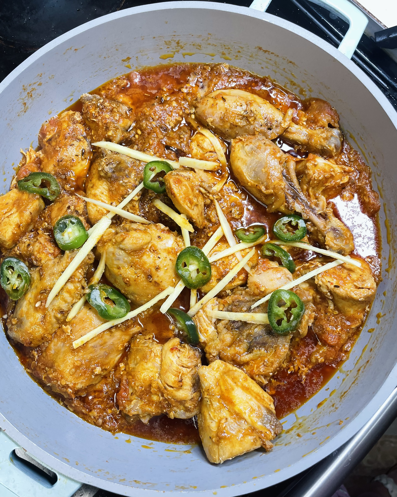

Karahi Recipe

Lahori Karahi is a popular and flavorful dish from the vibrant city of Lahore, Pakistan. Known for its rich, aromatic spices and tender chunks of meat, this dish is typically cooked in a wok-like pot called a "karahi," which gives it its name.
What sets Lahori Karahi apart from other regional variations is its simplicity and focus on fresh ingredients. It is cooked over high heat, allowing the flavors to intensify and meld together quickly, making it a popular choice for quick family dinners and festive gatherings alike.
Ingredients
- Meant
- Oil
- Tomatoes
- Garlic and Ginger paste
- Green Chillies
- Black Pepper
Steps
- Start by heating oil in a karahi (wok) or deep pan. Add freshly chopped garlic and ginger and sauté until golden and fragrant.
- Add your choice of chicken or mutton and cook until it turns light brown, stirring occasionally.
- Add chopped tomatoes, salt, red chili powder, and cumin seeds. Cover and cook on medium heat until the tomatoes soften and form a thick sauce.
- Keep cooking and stirring the meat until it is tender and fully cooked through. If needed, add a bit of water to prevent sticking.
- Add green chilies, garam masala, and freshly ground black pepper. Stir well to mix the flavors.
- Finish by garnishing with fresh ginger slices and chopped cilantro. Serve hot with naan or chapati.